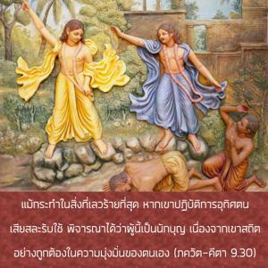
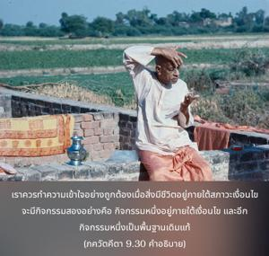
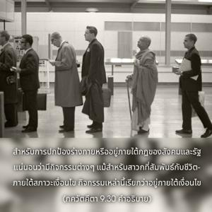

แม้กระทำในสิ่งที่เลวร้ายที่สุด หากเขาปฏิบัติการอุทิศตนเสียสละรับใช้พิจารณาได้ว่าผู้นี้เป็นนักบุญ เนื่องจากเขาสถิตอย่างถูกต้องในความมุ่งมั่นของตนเอง



คำว่า สุ-ทุราจารห์ ในโศลกนี้มีความสำคัญมาก เราควรทำความเข้าใจอย่างถูกต้องเมื่อสิ่งมีชีวิตอยู่ภายใต้สภาวะเงื่อนไข จะมีกิจกรรมอยู่สองอย่างคือกิจกรรมหนึ่งอยู่ภายใต้เงื่อนไข และอีกกิจกรรมหนึ่งเป็นพื้นฐานเดิมแท้ สำหรับการปกป้องร่างกายหรืออยู่ภายใต้กฎของสังคมและรัฐนั้นแน่นอนจะว่ามีกิจกรรมต่างๆ แม้สำหรับสาวกที่สัมพันธ์กับชีวิตภายใต้สภาวะเงื่อนไขกิจกรรมเหล่านี้เรียกว่าอยู่ภายใต้เงื่อนไข นอกจากนี้ชีวิตผู้สำนึกอย่างสมบูรณ์ในธรรมชาติทิพย์ของตนปฏิบัติในกฺฤษฺณจิตสำนึกหรืออุทิศตนเสียสละรับใช้ต่อองค์ภควานฺมีกิจกรรมที่เรียกว่าเป็นทิพย์ กิจกรรมเหล่านี้ปฏิบัติไปในสถานภาพเดิมแท้ของตนเอง เรียกทางเทคนิคว่าการอุทิศตนเสียสละรับใช้ ตอนนี้ที่อยู่ในระดับที่อยู่ภายใต้สภาวะที่มีเงื่อนไขนั้น บางครั้งกิจกรรมในการอุทิศตนเสียสละรับใช้และการรับใช้ที่มีเงื่อนไขสัมพันธ์กับร่างกายจะไปด้วยกันได้ แต่บางครั้งไปด้วยกันไม่ได้ สาวกจะระวังมากเพื่อไม่ทำสิ่งใดให้ไปทำลายสภาวะอันบริสุทธิ์ของตนเองเท่าที่จะเป็นไปได้ โดยทราบดีว่าความสมบูรณ์ในกิจกรรมขึ้นอยู่กับความรู้แจ้งมากยิ่งขึ้นในกฺฤษฺณจิตสำนึก อย่างไรก็ดีบางครั้งอาจพบว่าบุคคลในกฺฤษฺณจิตสำนึกปฏิบัติในสิ่งที่เลวร้ายที่สุดทางสังคมหรือทางการเมือง แต่การตกลงต่ำชั่วคราวเช่นนี้มิได้ตัดสิทธิ์ของเขา ใน ศฺรีมทฺ-ภาควตมฺ กล่าวว่าหากผู้ที่ตกลงต่ำแต่ปฏิบัติตนอย่างหมดหัวใจในการรับใช้ทิพย์ต่อองค์ภควานฺ พระองค์ผู้ทรงประทับภายในหัวใจจะทำให้เขาบริสุทธิ์ขึ้นและให้อภัยจากสิ่งเลวร้ายนั้น มลพิษทางวัตถุนั้นรุนแรงมาก แม้โยคีปฏิบัติในการรับใช้พระองค์อย่างสมบูรณ์บางครั้งยังตกหลุมพราง แต่กฺฤษฺณจิตสำนึกมีพลังมาก การตกลงต่ำชั่วครั้งชั่วคราวเช่นนี้จะได้รับการแก้ไขให้ถูกต้องโดยทันที ฉะนั้นวิธีการอุทิศตนเสียสละรับใช้จึงมีผลสำเร็จอยู่เสมอ ไม่มีผู้ใดควรเยาะเย้ยสาวกในการที่ตกลงต่ำจากวิถีทางอันประเสริฐอันเนื่องจากอุบัติเหตุดังจะอธิบายในโศลกต่อไป การตกลงต่ำชั่วคราวเช่นนี้จะยุติลงในเวลาต่อมาทันทีที่สาวกสถิตอย่างสมบูรณ์ในกฺฤษฺณจิตสำนึก
ดังนั้นบุคคลผู้สถิตในกฺฤษฺณจิตสำนึกและปฏิบัติด้วยความมุ่งมั่นในวิธีการสวดภาวนา หเร กฺฤษฺณ หเร กฺฤษฺณ กฺฤษฺณ กฺฤษฺณ หเร หเร / หเร ราม หเร ราม ราม ราม หเร หเร ควรพิจารณาว่าอยู่ในสถานภาพทิพย์ถึงแม้จะด้วยความบังเอิญหรือเป็นอุบัติเหตุที่พบว่าเขาตกลงต่ำ คำว่า สาธุรฺ เอว “เขาเป็นนักบุญ” นั้นได้มีการเน้นมาก มีคำเตือนสำหรับผู้ไม่ใช่สาวกว่าเนื่องจากการตกลงต่ำด้วยอุบัติเหตุสาวกไม่ควรถูกเยาะเย้ย และควรพิจารณาว่าเขายังเป็นนักบุญแม้ตกลงต่ำโดยอุบัติเหตุ และคำว่า มนฺตวฺยห์ ยิ่งเน้นขึ้นไปอีก หากผู้ใดไม่ปฏิบัติตามกฎนี้และเยาะเย้ยสาวกในการตกลงต่ำโดยอุบัติเหตุเท่ากับผู้นี้ไม่เชื่อฟังคำสั่งขององค์ภควานฺ คุณสมบัติเดียวของสาวกคือปฏิบัติการอุทิศตนเสียสละรับใช้อย่างมุ่งมั่นเท่านั้น
ใน นฺฤสึห ปุราณ มีข้อความดังต่อไปนี้
ภควติ จ หราวฺ อนนฺย-เจตา
ภฺฤศ-มลิโน ’ปิ วิราชเต มนุษฺยห์
น หิ ศศ-กลุษ-จฺฉพิห์ กทาจิตฺ
ติมิร-ปราภวตามฺ อุไปติ จนฺทฺรห์
ความหมายคือ แม้ปฏิบัติในการอุทิศตนเสียสละรับใช้อย่างสมบูรณ์ต่อองค์ภควานฺบางครั้งพบว่าบุคคลปฏิบัติในกิจกรรมที่น่ารังเกียจ กิจกรรมเหล่านี้ควรพิจารณาว่าเหมือนกับจุดต่างๆที่รวมกันเป็นรูปกระต่ายบนดวงจันทร์ จุดเหล่านี้ไม่ได้กลายมาเป็นอุปสรรคในการส่องแสงของดวงจันทร์ ในทำนองเดียวกันการตกลงต่ำโดยอุบัติเหตุของสาวกจากวิถีทางของบุคลิกนักบุญไม่ได้ทำให้เขาน่ารังเกียจ
อีกด้านหนึ่งเราไม่ควรเข้าใจผิดว่าสาวกที่อยู่ในการอุทิศตนเสียสละรับใช้ทิพย์สามารถปฏิบัติในสิ่งที่น่ารังเกียจต่างๆได้ โศลกนี้พาดพิงถึงเฉพาะอุบัติเหตุอันเนื่องมาจากพลังอันแข็งแกร่งที่มาสัมผัสกับวัตถุเท่านั้น การอุทิศตนเสียสละรับใช้เหมือนกับการประกาศสงครามกับพลังงานแห่งความหลง ตราบเท่าที่เรายังไม่แข็งแรงพอที่จะต่อสู้กับพลังงานแห่งความหลงอาจตกลงต่ำโดยอุบัติเหตุได้ แต่เมื่อแข็งแรงพอเราก็จะไม่อยู่ภายใต้อำนาจแห่งการตกลงต่ำเช่นนี้อีกต่อไป ดังที่ได้อธิบายแล้วว่าไม่ควรมีผู้ใดฉวยประโยชน์จากโศลกนี้ไปกระทำสิ่งเหลวไหลและคิดว่าตนเองยังเป็นสาวก หากไม่พัฒนาบุคลิกของตนให้ดีขึ้นด้วยการอุทิศตนเสียสละรับใช้พึงเข้าใจไว้ว่าเราไม่ใช่สาวกระดับสูง